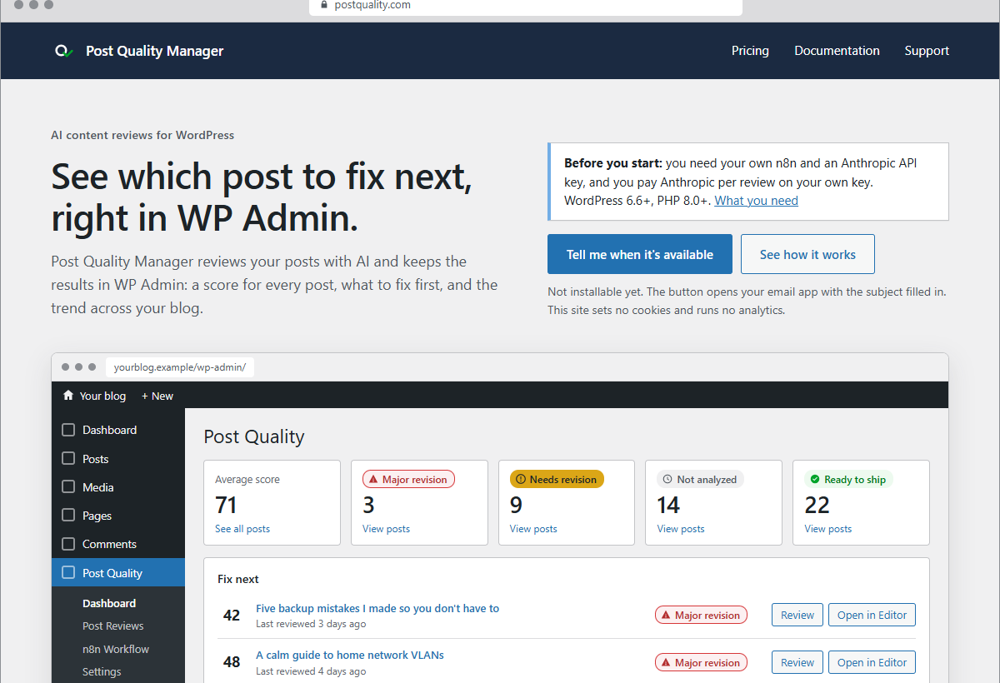
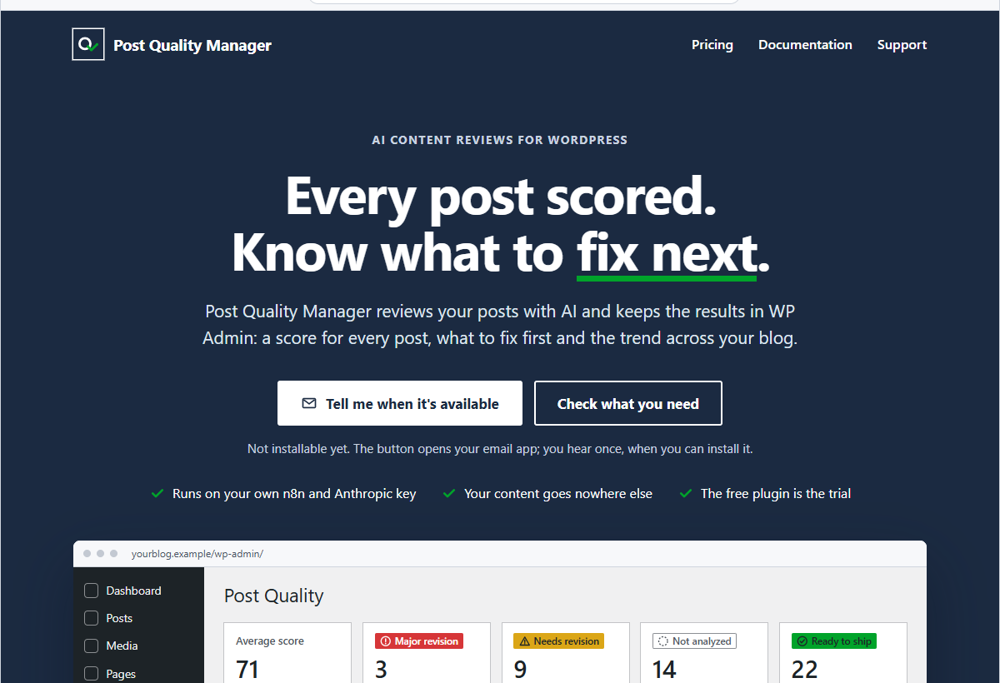
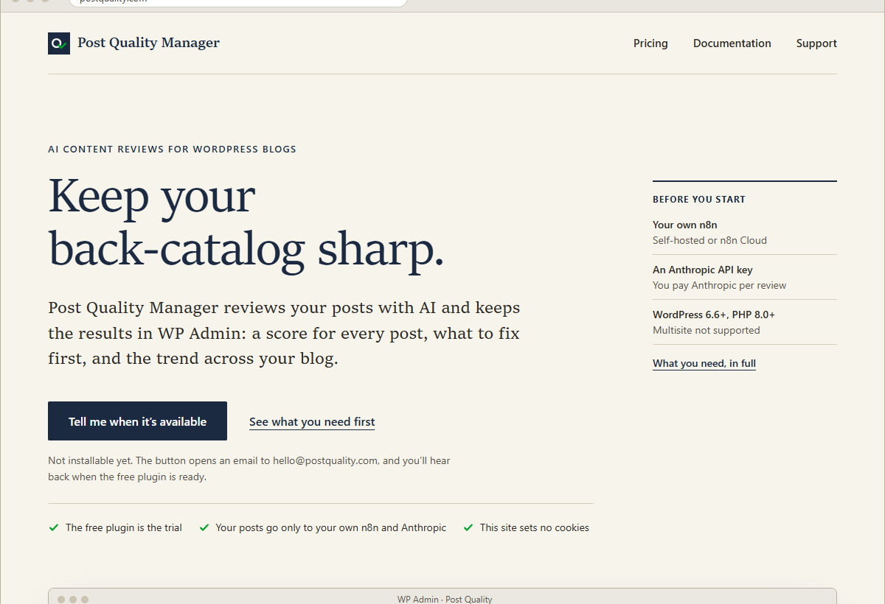
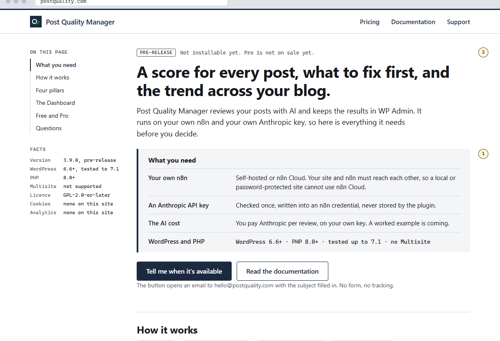

postquality.com home page: four options
Each picture is the first screen of the website postquality.com, as a visitor would see it on a laptop before scrolling. None of them is the plugin. Pick the one you would build on, or say which parts to mix.
The header (logo, Pricing, Documentation, Support), the headline, the button "Tell me when it's available" and the "What you need" note. This is what the options change.
The framed window with a dark sidebar is a screenshot placeholder: the plugin's Dashboard in WP Admin with made-up demo posts. It is the same in all four. Real screenshots from your Local sandbox replace it later.
Already decided, applied to whichever option you pick: the logo is version B (icon + "Post Quality" strong + "Manager" lighter); on dark backgrounds it sits on a slightly lighter navy strip. The logos in the pictures below still vary; ignore them.
1WordPress look
The website borrows the plugin's colours (WordPress blue and grey), so a WordPress user feels at home; a large picture of the plugin follows the headline.
Serves: the visitor who wants to see the product before reading about it.

2Navy and check
The brand colours carry the page: a dark navy band, large white headline, white button, green ticks; the plugin picture overlaps the band's lower edge.
Serves: a confident product launch; the most like a classic product landing page.

3Editorial
Serif headlines on warm paper, like a well-made magazine for people who write; the plugin picture appears as a captioned figure.
Serves: bloggers who care about writing; calm and literary.

4Plain and honest
Reads like documentation: a facts column (version, WordPress and PHP, no cookies), "What you need" before the first button, the plugin picture smaller and further down.
Serves: the visitor who doubts they can run it (own n8n, an AI key, the cost).
